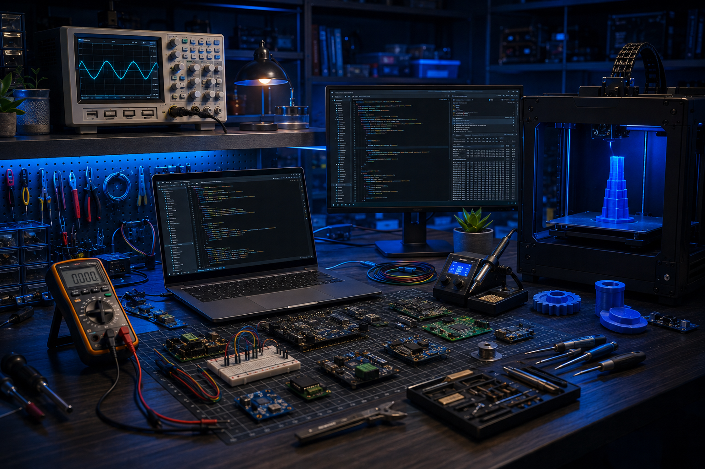

IoT
Пристрої та телеметрія
Розробка пристроїв, які вимірюють, передають, зберігають і відображають дані в режимі, зручному для контролю та аналізу.
Про команду
Ми спеціалізуємося на швидкій перевірці технічних гіпотез, створенні дослідних зразків, доопрацюванні рішень і підготовці їх до практичного використання.

Наша база
Ми закриваємо повний цикл прикладної розробки: аналіз задачі, електроніка, firmware, механіка прототипу, бездротова передача даних, серверна логіка, база даних і візуалізація.
Якісні обчислювальні потужності
Сучасне лабораторне вимірювальне обладнення
Зборка та монтаж предсерійних зразків
Виготовлення не великих механічних зразків
3D-моделювання, 3D-друк.
Прототипування, тестування, доопрацювання і супровід.
Досвід
Технічна база та досвід — embedded, IoT, сенсори, обробка сигналів, телеметрія, візуалізація та прототипування — дозволяє швидко адаптувати досвід та рішення під прикладні сценарії.
Розробка пристроїв, які вимірюють, передають, зберігають і відображають дані в режимі, зручному для контролю та аналізу.
Алгоритми роботи пристроїв, робота з периферією, стабільність, діагностика, оновлення та адаптація під реальні умови.
Пристрої на базі сенсорів, збір даних, мережева архитектура і побудова логіки виявлення подій.
Фільтрація, аналіз, пошук корисних ознак, формування подій, графіки та візуальне представлення результатів.
Досвід створення тестових прототипів електронних і механічних модулів для інтеграції додаткового обладнання з тим що літає, плаває та їздить.
3D-друк, корпуси, кріплення, перевірка посадки компонентів, підготовка прототипів до польових або лабораторних тестів.
Принцип
Окремі рішення можуть перебувати на стадії тестових прототипів. Тому оптимальний формат співпраці — узгодження задачі, створення першого зразка, перевірка, збір зауважень і лише потім рішення щодо доопрацювання або малосерійного виготовлення.